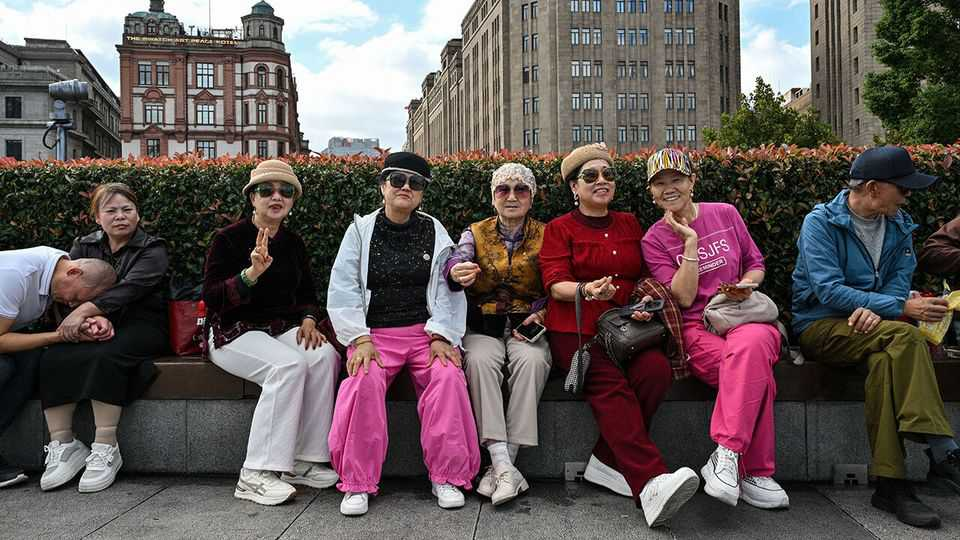

China loves to rank its cities. The government wants it to stop
Annual city scorecards of all sorts are being torn up

Oct 29th 2026
A scandal is turning over tables in China. Each year apparatchiks in cities and counties across the country battle one another for coveted municipal rankings. The league tables, which are published by media and consulting firms, declare winners and losers in the race for development and attractiveness of living. The rise and fall of many county-level cadres can be traced to a “100 strong counties” list published for the past decade, until this year.
The central government wants to end such competition. New rules have banned organisations from creating data-based rankings or awarding special titles to cities and towns without permission.
Blame officials in Haicheng, a city in the rust-belt north-east, who in 2025 appeared to be so good at their jobs that they leapt from well outside the 100 strongest counties to 91st on the list. It was revealed this year that they had in fact paid CCID, the consulting firm behind the tables, around 5m yuan ($750,000) for the boost. The disclosure caused uproar among ambitious bureaucrats. One frustrated statistician in Hubei province called the incident China’s newest form of corruption.
Municipal pecking orders have long been a useful, if unofficial, way of understanding a country with around 700 cities and close to 3,000 counties. Since the late 1990s most have received an informal “tier” status. The first tier—Beijing, Guangzhou, Shanghai and Shenzhen—has always been clear. Things grow murky at the fifth and sixth. Property developers have used these rankings to gauge real-estate values. The central government has never officially recognised them, although it does refer to city tiers in some property-market data.
Consulting firms have made a business out of rankings. A city-research unit at Yicai, a media group, began evaluating and scoring hundreds of cities in 2016. The same year CCID started issuing its top-counties list. Others have published scorecards focused on specific industries or administrative geographies. One online media outfit publishes a list of city districts with the strongest economies. State-backed groups also participate. The China National Institute of Standardisation (CNIS), for example, issues a report that ranks cities on natural beauty and culture, among other things.
The most closely watched list has been Yicai’s, which tracks 337 cities. It has used metrics such as economic competitiveness, intercity mobility, industrial strength, consumer spending and even nightlife to devise scores for each city. Among these is the “new-first-tier” ranking, a list of China’s 15 most promising second-tier cities. Officials often cite such rankings as a mark of success. Those in Haicheng made sure to highlight their incredible achievements in the county’s annual work report for 2025.
The crackdown on rankings might make it more difficult to figure out who is up and who is down. CCID appears to have stopped posting its “100 strong counties” list after the Haicheng debacle. CNIS posts its ranking in October; it had not released one at the time of reporting. Yicai has continued to publish a wide range of information on Chinese cities this year but has stopped assigning them clear rankings. These are still easy to create with the data Yicai provides, wonks point out.
Perhaps it is a good time to phase out city rankings. Ma Liang, a professor at Renmin University in Beijing, has observed that city officials have started experiencing “ranking anxiety”. With economic growth slowing considerably since scoring began, a property crisis sapping local finances and a perpetual anti-corruption campaign upending careers, it is one less thing for them to fret over. ■
Subscribers can sign up to Drum Tower, our new weekly newsletter, to understand what the world makes of China—and what China makes of the world.